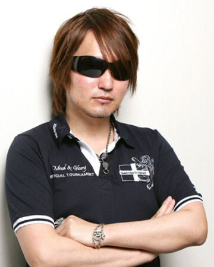

Норіакі Кубо
Японський мангака. Він найбільш відомий своєю мангою «Бліч».
Фото:

Короткі відомості
- Народився Кубо Тайто 26 червня 1977 року в Японії, префектура Хіросіма.
- Першою крупною роботою Кубо стала фентезі-манґа «Zombie Powder», видана в 1999 році в журналі Shonen Jump.
Особливої популярності «Zombie Powder» не здобула, і після виходу чотирьох томів видання було припинене.
Проте вслід в тому ж журналі з'явилася манга «Bleach», яка стала дуже відомою.
- Існує міф, згідно з яким «Bleach» спочатку взагалі не хотіли публікувати:
за словами редактора, вона була дуже схожа на Yu Yu Hakusho, відому манґу,
яка виходила в тому ж Shonen Jump в дев'яностих роках.
Після цього Тайто Кубо вирішив покінчити з кар'єрою манґаки, але Акіра Торіяма,
творець Dragon Ball, помітив «Bleach» та відправив Кубо лист з проханням продовжувати роботу.